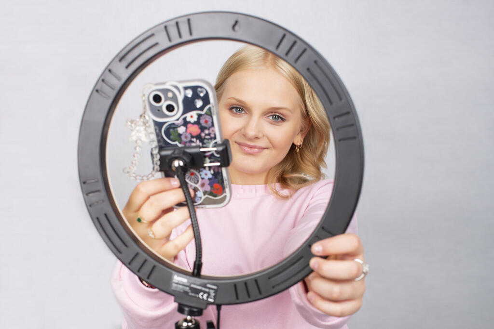
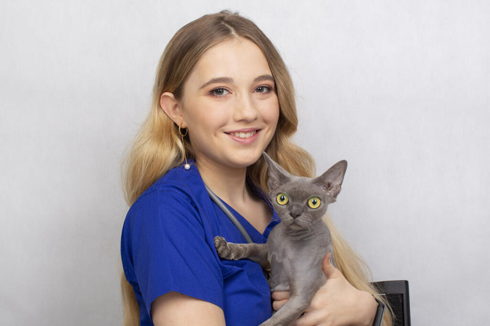

Plan dni otwartych :
sala 02 - powitanie gości, prezentacja informacji o szkole
sala 09 - pracownia fotograficzna - zajęcia prowadzone w pracowni,
wykonywanie zdjęć różnym ustawieniem
sala 103 - zespół muzyczny
sala 106 - Warsztat reklamowy
sala107 - google VR
sala 108 weterynaria - poznanie kierunku
sala 206 - programiści - prezentacja i wydruk 3D
sala 208 - sala pokazowa dla gości, mogą przetestować sprzęt
sala 301 / 302 - wystawa fotografii
sala 306/307- finał turnieju CS:GO ze streamingiem na żywo
sala 305 PKO, 313 PKO - fryzjerstwo - odwiedzjący będą mogli
skorzystać z możliwości stylizacji włosów, pielęgnacji itp., w
planach quiz z nagrodami, będą vouchery na czesanie w TEB salonie
i jeśli się uda, nagrody rzeczowe
sala 506 PKO - montażowa
sala 508B PKO - reklama - klasa 4d1 pokaz pracowni, opis kierunku,
konkurs

Kim jest Technik reklamy?
To wielozadaniowiec, który zajmuje się planowaniem, realizacją i
badaniem kampanii reklamowych. Jego kreatywność nie zna granic - z
łatwością wymyśla hasła reklamowe, by za chwilę zająć się
organizacją sesji zdjęciowej, a pod koniec dnia napisać jeszcze
scenariusz do reklamy. Jego wyobraźnia nie zna granic! Jeśli
pasjonuje Cię świat reklamy i marzysz o tym, by znajomi na fejsie
udostępniali stworzone przez Ciebie filmy na youtubie, to ten
zawód jest właśnie dla Ciebie!
Czym zajmuję się Technik informatyk?
To prawdziwy bystrzak - z łatwością zarządza ogromnymi bazami
danych, potrafi napisać aplikację na komórkę, kątem oka śledząc
poczynania zawodników w LoLa. Z łatwością posługuje się językami
programowania, dzięki czemu dogada się z każdym komputerem, a
zbudowanie nowego komputera i stworzenie sieci lokalnej to bułka z
masłem. Jeśli czujesz, że świat online, aplikacji i informatyki to
Twoje miejsce na Ziemi, to ten zawód jest właśnie dla Ciebie!

Kim jest Technik weterynarii?
To osoba, która codziennie niesie pomoc potrzebującym zwierzętom.
Nie straszne mu asystowanie podczas operacji i czy podanie
zastrzyku od fretki po nosorożca. Z łatwością ocenia stan zdrowia
pacjentów i zawsze służy radą jak zapobiec chorobom. Dzięki swoim
supermocom zakładanie opatrunków czy podawanie leków jest dla
zwierząt niemalże przyjemnością - krążą nawet słuchy, że
wieczorami umawia się z nimi na plotki w pobliskim Starbucksie!
Jeśli czujesz, że masz szczególny kontakt ze zwierzętami, a do
tego uwielbiasz pomagać i troszczyć się o dobro innych, to ten
zawód jest właśnie dla Ciebie!
Kim jest Technik fotografii i multimediów?
W ciemni fotograficznej porusza się z prędkością dźwięku i z
łatwością wywoła każde zdjęcie. Zajmuje się nie tylko
fotografowaniem, ale też obróbką zdjęć. Posiada też szeroką wiedzę
z zakresu tworzenia projektów multimedialnych. Łączenie
umiejętności technicznych z wrażliwością na estetykę to jego tajna
supermoc! Jeśli uważasz, że fotografia to nie tylko cykanie
losowych fotek, ale też forma sztuki i wyrażania siebie, to ten
zawód jest właśnie dla Ciebie!
Kim jest Technik usług fryzjerskich?
Przede wszystkim zajmuje się wszystkimi zabiegami i działaniami
pielęgnacyjnymi związanymi z włosami. Strzyżenie, farbowanie i
modelowanie to dla niego pestka! Dzięki swojej wiedzy i stałym
doszkalaniu doskonale wie, jaka fryzura podkreśli największe
zalety każdej twarzy. Kreatywny talent, wrodzona intuicja i
zdolności manualne sprawiają, że każda jego stylizacja jest
strzałem w dziesiątkę! Jeśli chcesz pomagać ludziom czuć się
dobrze w swojej skórze, a do tego nie brakuje Ci kreatywności, to
ten zawód jest właśnie dla Ciebie!
Czym zajmuję się Technik programista?
To magik, który rozwiązuje problemy przy pomocy kodu. Wszyscy go
potrzebują: pisze aplikacje dla e-commerce, projektuje aplikacje
webowe z cudownie funkcjonalnym front endem i superwydajnym back
endem, umie wyczarować grę na komórkę i program na PC, a w
międzyczasie z wdziękiem i wirtuozerią administruje danymi w
bazach, które sam wcześniej stworzył. Wszystko to robi, wspierając
projekty na całym świecie, bo doskonale dogaduje się w języku
angielskim.
Kim jest Technik informatyk i esportowiec?
To osoba, dla której zbudowanie nowego komputera i stworzenie
sieci lokalnej to pestka. Ale nie tylko! W świecie online nie ma
sobie równych! To prawdziwy bystrzak - z łatwością zarządza
ogromnym bazami danych, kątem oka śledząc poczynania zawodników w
LoL'a. Zorganizuje turniej esportowy, ustawi sieć i jeszcze będzie
komentował zawody! To także prawdziwy poliglota - z łatwością
posługuje się językami programowania, dzięki czemu dogada się z
każdym komputerem! Jeśli czujesz, że świat gier i informatyki to
Twoje miejsce na Ziemi, to ten zawód jest właśnie dla Ciebie!